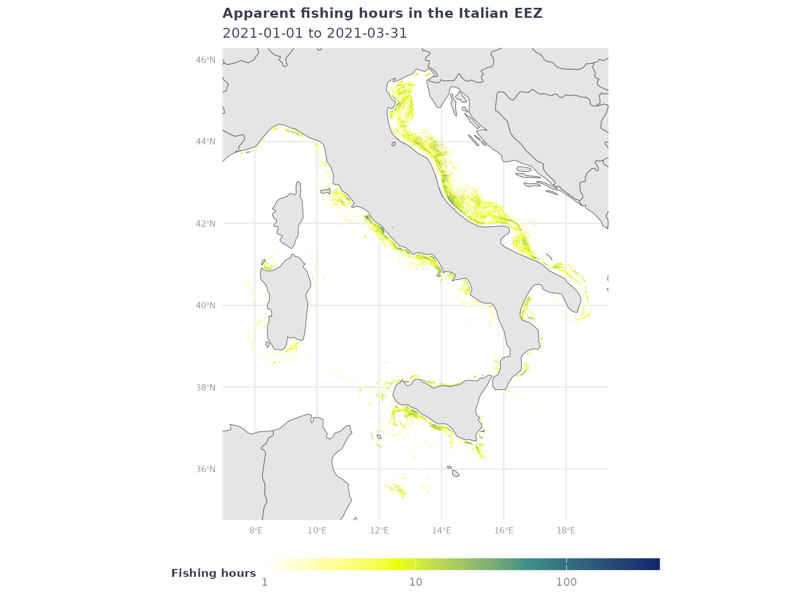
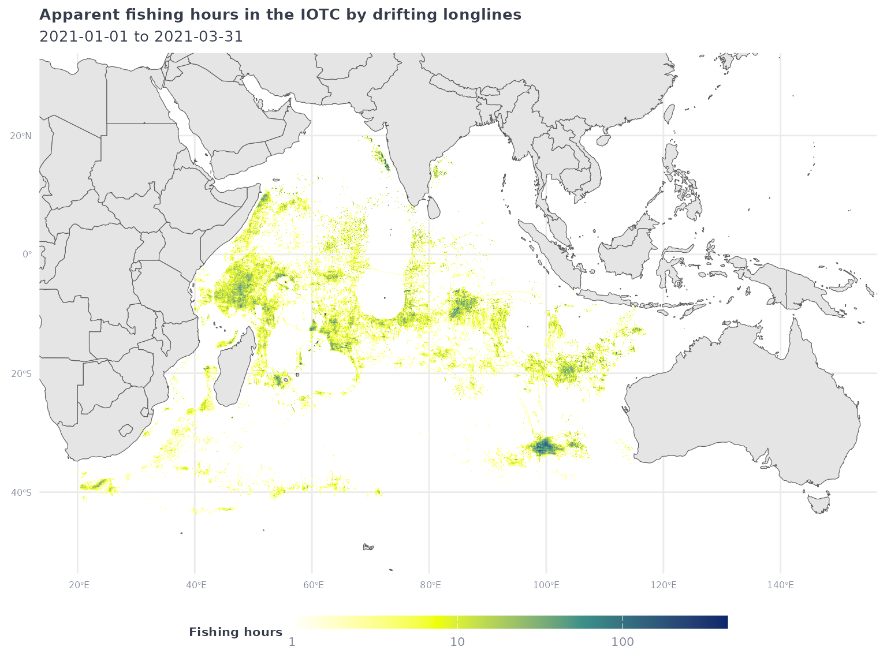
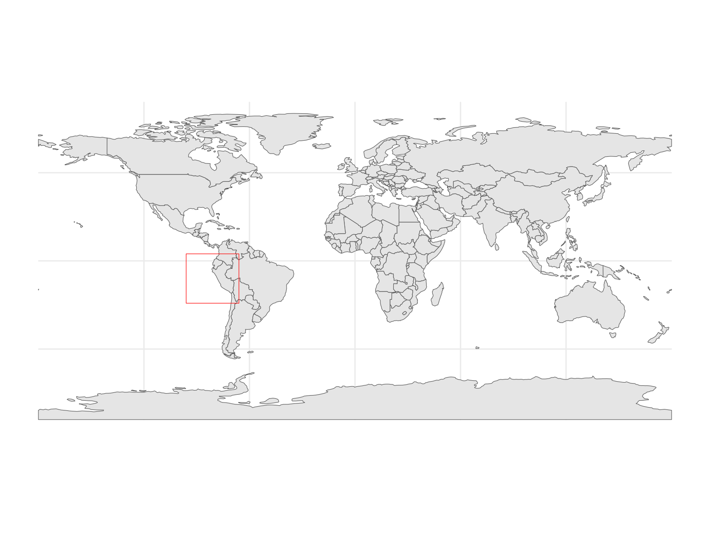

Overview
A powerful feature of gfwr is the ability to get data
for making custom maps of human activity at sea, such as apparent
fishing effort, at-sea transshipment, and port visits. The
gfw_ais_fishing_hours() function provides gridded
(e.g. raster) data from GFW’s 4Wings
Map Visualization API and is useful for making heatmaps, while the
gfw_event() function supplies vector data (mostly point
locations) from the GFW Events
API for individual vessel events.
This vignette demonstrates how to use and combine multiple
gfwrfunctions to make a variety of maps of fishing vessel activity. Specifically, this vignette will show how to use thegfw_ais_fishing_hours()function to make heatmaps of apparent fishing effort, and thegfw_event()function to visualize the locations of specific events. It will demonstrate how to request data for specific regions usinggfwr’s built-in options, as well as how to use a custom region provided by the user.
Setup
To get started, first load the gfwr package.
#> ℹ Loading gfwrMake sure your API key is set up in your .Renviron file
(see the Authorization section of the
gfwr README)
For this vignette, we’ll also use some tidyverse
packages for data wrangling and plotting, as well as sf for
creating and manipulating spatial data and rnaturalearth to
add reference data to our maps.
library(dplyr)
library(tidyr)
library(sf)
library(rnaturalearth)
library(rnaturalearthdata)
library(glue)
library(ggplot2)To make our maps a little nicer, let’s define a custom
ggplot2 theme and a color palette for our heatmaps of
apparent fishing effort.
# Map theme with dark background
map_theme <- ggplot2::theme_minimal() +
ggplot2::theme(
panel.border = element_blank(),
legend.position = "bottom", legend.box = "vertical",
legend.key.height = unit(3, "mm"),
legend.key.width = unit(20, "mm"),
legend.text = element_text(color = "#848b9b", size = 8),
legend.title = element_text(face = "bold", color = "#363c4c", size = 8, hjust = 0.5),
plot.title = element_text(face = "bold", color = "#363c4c", size = 10),
plot.subtitle = element_text(color = "#363c4c", size = 10),
axis.title = element_blank(),
axis.text = element_text(color = "#848b9b", size = 6)
)
# Palette for fishing activity
map_effort_light <- c("#ffffff", "#eeff00", "#3b9088","#0c276c")We’ll also define a common date range to use for querying data.
start_date <- '2021-01-01'
end_date <- '2021-03-31'Making heatmaps of apparent fishing effort with
gfw_ais_fishing_hours()
The gfwr function gfw_ais_fishing_hours()
provides aggregated gridded (e.g. raster) data for AIS-based apparent
fishing effort. It was designed to provide data for a specific region,
offering users the ability to select from multiple built-in region types
by specifying a specific Exclusive Economic Zone (EEZ), Marine Protected
Area (MPA), or Regional Fisheries Management Organization (RFMO).
The list of available regions for each type, and their
label and id, can be accessed with the
gfw_regions() function.
eez_regions <- gfw_regions(region_source = 'EEZ')
eez_regions
#> # A tibble: 285 × 5
#> iso label id GEONAME POL_TYPE
#> <chr> <chr> <dbl> <chr> <chr>
#> 1 ASM American Samoa 8444 United States Exclusive Eco… 200NM
#> 2 SHN Ascension 8379 British Exclusive Economic … 200NM
#> 3 COK Cook Islands 8446 New Zealand Exclusive Econo… 200NM
#> 4 FLK Falkland / Malvinas Islands 8389 Overlapping claim Falkland … Overlap…
#> 5 PYF French Polynesia 8440 French Exclusive Economic Z… 200NM
#> 6 PCN Pitcairn 8439 British Exclusive Economic … 200NM
#> 7 SHN Saint Helena 8380 British Exclusive Economic … 200NM
#> 8 WSM Samoa 8445 Samoan Exclusive Economic Z… 200NM
#> 9 TON Tonga 8448 Tongan Exclusive Economic Z… 200NM
#> 10 SHN Tristan da Cunha 8382 British Exclusive Economic … 200NM
#> # ℹ 275 more rowsgfwr also includes the gfw_region_id()
function to get the label and id for a
specific region using the region argument. For EEZs, the
region corresponds to the ISO3 code. Note that, for some
countries, the ISO3 code will return multiple regions. For RFMOs,
region corresponds to the RFMO abbreviation
(e.g. "ICCAT") and for MPAs it refers to the full name of
the MPA. The gfw_region_id() function also works in
reverse. If a region id is passed as a numeric
to the function as the region, the corresponding region
label can be returned. This is especially useful when
events are returned with region ids and you want the more descriptive
label. See here
for more information about the regions used by GFW.
Let’s start by making a map of apparent fishing effort in the Italian
EEZ. The gfw_ais_fishing_hours() function requires we
provide the id of a specific region (or a shapefile, but
more on that later). We could look up the Italian EEZ id in
the eez_regions table we just created, but let’s use
gfw_region_id().
# Use gfw_region_id function to get EEZ code for Italy
ita_eez_code <- gfw_region_id(region = "ITA", region_source = "EEZ")#> # A tibble: 1 × 5
#> iso3 label id GEONAME POL_TYPE
#> <chr> <chr> <dbl> <chr> <chr>
#> 1 ITA Italy 5682 Italian Exclusive Economic Zone 200NMThe gfw_ais_fishing_hours() function allows users to
specify multiple criteria to customize the data they download, including
the date range, spatial and temporal resolution, and grouping variables.
See the documentation for gfw_ais_fishing_hours() or the GFW
APIs for more info about these parameter options.
In this case, let’s request data during our time range at 100th degree resolution and grouped by flag State:
# Download data for the Italian EEZ
eez_fish_df <- gfw_ais_fishing_hours(
spatial_resolution = "HIGH",
temporal_resolution = "YEARLY",
group_by = "FLAG",
start_date = start_date,
end_date = end_date,
region = ita_eez_code$id,
region_source = "EEZ"
)#> # A tibble: 69,557 × 6
#> Lat Lon `Time Range` flag `Vessel IDs` `Apparent Fishing Hours`
#> <dbl> <dbl> <dbl> <chr> <dbl> <dbl>
#> 1 42.8 14.2 2021 ITA 9 36.9
#> 2 44.0 13.2 2021 ITA 5 8.3
#> 3 41.9 12.0 2021 ITA 7 9.13
#> 4 42.1 16.1 2021 ITA 4 4.83
#> 5 40.8 14.0 2021 ITA 7 22.4
#> 6 42.1 15.8 2021 ITA 4 5.97
#> 7 41.9 16.3 2021 ITA 2 6.3
#> 8 42.3 15.8 2021 ITA 6 6.76
#> 9 41.3 13.0 2021 ITA 5 11.0
#> 10 39.1 9.19 2021 ITA 1 1.03
#> # ℹ 69,547 more rowsBecause the data includes fishing by all flag states, to make a map of all activity, we first need to summarize activity by grid cell.
eez_fish_all_df <- eez_fish_df %>%
group_by(Lat, Lon) %>%
summarize(fishing_hours = sum(`Apparent Fishing Hours`, na.rm = T))
#> `summarise()` has grouped output by 'Lat'. You can override using the `.groups`
#> argument.Now we can use ggplot2 to plot the data.
eez_fish_all_df %>%
filter(fishing_hours >= 1) %>%
ggplot() +
geom_tile(aes(x = Lon,
y = Lat,
fill = fishing_hours)) +
geom_sf(data = ne_countries(returnclass = "sf", scale = "medium")) +
coord_sf(xlim = c(min(eez_fish_all_df$Lon),max(eez_fish_all_df$Lon)),
ylim = c(min(eez_fish_all_df$Lat),max(eez_fish_all_df$Lat))) +
scale_fill_gradientn(
trans = 'log10',
colors = map_effort_light,
na.value = NA,
labels = scales::comma) +
labs(title = "Apparent fishing hours in the Italian EEZ",
subtitle = glue("{start_date} to {end_date}"),
fill = "Fishing hours") +
map_theme
As another example, let’s request low resolution apparent fishing effort data within the jurisdiction of the Indian Ocean Tuna Commission (IOTC), grouped yearly by gear type:
# Download data for the IOTC
iotc_fish_df <- gfw_ais_fishing_hours(
spatial_resolution = "LOW",
temporal_resolution = "YEARLY",
group_by = "GEARTYPE",
start_date = start_date,
end_date = end_date,
region = "IOTC",
region_source = "RFMO"
)#> # A tibble: 106,054 × 6
#> Lat Lon `Time Range` geartype `Vessel IDs` Apparent Fishing Hou…¹
#> <dbl> <dbl> <dbl> <chr> <dbl> <dbl>
#> 1 -19 43.3 2021 drifting_longli… 2 9.82
#> 2 -20 57.4 2021 fishing 1 3.39
#> 3 -15.2 115. 2021 drifting_longli… 1 2.96
#> 4 -5.6 50.1 2021 drifting_longli… 5 10.1
#> 5 18.4 71.6 2021 drifting_longli… 2 39.2
#> 6 15.9 61.8 2021 squid_jigger 2 9.84
#> 7 -14.1 61.2 2021 set_longlines 3 14.6
#> 8 -3.1 57.3 2021 drifting_longli… 1 0.97
#> 9 -8.7 86.5 2021 drifting_longli… 4 7.18
#> 10 14.4 81.2 2021 drifting_longli… 4 26.2
#> # ℹ 106,044 more rows
#> # ℹ abbreviated name: ¹`Apparent Fishing Hours`This time, instead of aggregating all activity, let’s plot the activity of a specific gear type:
iotc_p1 <- iotc_fish_df %>%
filter(geartype == 'drifting_longlines') %>%
filter(`Apparent Fishing Hours` >= 1) %>%
ggplot() +
geom_tile(aes(x = Lon,
y = Lat,
fill = `Apparent Fishing Hours`)) +
geom_sf(data = ne_countries(returnclass = "sf", scale = "medium")) +
coord_sf(xlim = c(min(iotc_fish_df$Lon),max(iotc_fish_df$Lon)),
ylim = c(min(iotc_fish_df$Lat),max(iotc_fish_df$Lat))) +
scale_fill_gradientn(
transform = 'log10',
breaks = c(1,10,100),
colors = map_effort_light,
na.value = NA,
labels = scales::comma) +
labs(title = "Apparent fishing hours in the IOTC by drifting longlines",
subtitle = glue("{start_date} to {end_date}"),
fill = "Fishing hours") +
map_theme
iotc_p1 
When your API request times out
For API performance reasons, the gfw_ais_fishing_hours()
function restricts individual queries to a single year of data. However,
even with this restriction, it is possible for API request to time out
before it completes. When this occurs, the initial
gfw_ais_fishing_hours() call will return an error, and
subsequent API requests using any gfwr gfw_
function will return an HTTP 429 error until the original request
completes:
Error in
httr2::req_perform(): ! HTTP 429 Too Many Requests. • Your application token is not currently enabled to perform more than one concurrent report. If you need to generate more than one report concurrently, contact us at apis@globalfishingwatch.org
Although no data was received, the request is still being processed
by the APIs and will become available when it completes. To account for
this, gfwr includes the gfw_last_report()
function, which let’s users request the results of their last API
request with gfw_ais_fishing_hours().
The gfw_last_report() function will tell you if the APIs
are still processing your request and will download the results if the
request has finished successfully. You will receive an error message if
the request finished but resulted in an error or if it’s been >30
minutes since the last report was generated using
gfw_ais_fishing_hours(). For more information, see the Get
last report generated endpoint documentation on the GFW API
page.
If you’re struggling with this issue, we suggest breaking your request into smaller individual requests and then binding the results in R.
Plotting vessel events
The gfw_event() function provides spatial data about the
location of specific vessel activities. There are currently five
available event types
("FISHING","ENCOUNTER","LOITERING",
"PORT VISIT", and "GAP") and the
vessel-types argument allow users to request events for
different categories of vessels (e.g. "FISHING",
"CARRIER", "CARGO", etc.). There are also a
few event-specific arguments for specifying things like encounter types
and confidence levels. For more details, see the
gfw_event() function documentation and the GFW
API documentation.
In this example, we will use gfw_event() to request
encounter events between fishing vessels and refrigerated carrier
vessels. We’ll restrict events to those within the jurisdiction of the
Indian Ocean Tuna Commission (IOTC) using the region and
region_source arguments like we did in the previous
example.
# using same example as above
encounters_df <- gfw_event(event_type = "ENCOUNTER",
encounter_types = "CARRIER-FISHING",
start_date = start_date,
end_date = end_date,
region = "IOTC",
region_source = "RFMO")
#> [1] "Downloading 178 events from GFW"Encounters events have two rows per event to represent both vessels.
Because each row shares the same event ID (eventId), we can
extract the eventId and select one row per
eventId to remove duplicate positions. We’ll also use the
lon and lat coordinates to create a
sf object for each encounter event.
encounters_sf_df <- encounters_df %>%
tidyr::separate(eventId, c("eventId","vessel_number")) %>%
filter(vessel_number == 1) %>%
sf::st_as_sf(coords = c("lon","lat"), crs = 4326) %>%
select(eventId, eventType, geometry)To assist with plotting, let’s get the bounding box of the encounter events.
enc_bbox <- st_bbox(encounters_sf_df)Now let’s add the encounters layer to our previous map of drifting longline effort in the IOTC and use the bounding box to restrict the plot to the area with encounters.
iotc_p1 +
geom_sf(data = encounters_sf_df,
aes(color = eventType),
alpha = 0.7, size = 1) +
coord_sf(xlim = enc_bbox[c(1,3)],
ylim = enc_bbox[c(2,4)]) +
labs(title = 'Apparent fishing hours in the IOTC by drifting longlines and fishing vessel encounter events with carrier vessels',
color = 'Event type')
#> Coordinate system already present.
#> ℹ Adding new coordinate system, which will replace the existing one.
Making maps for custom regions
The gfw_ais_fishing_hours() and gfw_event()
functions also allow users to download data within a custom region by
providing a GeoJSON polygon. To facilitate this, the
gfw_ais_fishing_hours() and gfw_event()
functions allow users to pass a sf object to the
region argument.
To demonstrate this, we’ll first create a tibble of coordinates
defining an arbitrary polygon and convert to an sf
object.
my_shp <- tibble(
lon = c(-96,-96,-66,-66,-96),
lat = c(-24,4,4,-24,-24)
) %>%
sf::st_as_sf(coords = c("lon","lat"), crs = 4326) %>%
summarize(geometry = st_combine(geometry)) %>%
st_cast("POLYGON")Plot the sf object to confirm it was created
successfully.
ggplot() +
geom_sf(data = ne_countries(returnclass = "sf", scale = "small")) +
geom_sf(
data = my_shp,
fill = NA,
color = 'red') +
map_theme
Let’s create a sf bounding box object for our region to
use for plotting later. Although our shape is a simple rectangle in this
example, this is helpful when using more complex regions.
my_shp_bbox <- st_bbox(my_shp)Now we’re ready to request data in our custom region from
gfw_ais_fishing_hours() and gfw_event().
my_raster_df <- gfw_ais_fishing_hours(spatial_resolution = "LOW",
temporal_resolution = "YEARLY",
group_by = "GEARTYPE",
start_date = start_date,
end_date = end_date,
region = my_shp,
region_source = "USER_SHAPEFILE")For events, we’ll request high-confidence port visits by fishing vessels
my_port_events_df <- gfw_event(event_type = "PORT_VISIT",
confidences = 4,
vessel_types = "FISHING",
start_date = start_date,
end_date = end_date,
region = my_shp,
region_source = "USER_SHAPEFILE")
#> [1] "Downloading 4157 events from GFW"and loitering events by refrigerated cargo vessels
my_loitering_events_df <- gfw_event(event_type = "LOITERING",
vessel_types = "CARRIER",
start_date = start_date,
end_date = end_date,
region = my_shp,
region_source = "USER_SHAPEFILE")
#> [1] "Downloading 50 events from GFW"As before, let’s summarize the raster to plot all fishing activity by fishing vessels
my_raster_all_df <- my_raster_df %>%
group_by(Lat, Lon) %>%
summarize(fishing_hours = sum(`Apparent Fishing Hours`, na.rm = T))
#> `summarise()` has grouped output by 'Lat'. You can override using the `.groups`
#> argument.and combine our two event datasets and create sf objects
for each event.
my_events_sf <- my_port_events_df %>%
select(eventId, lon, lat, eventType) %>%
bind_rows(
my_loitering_events_df %>%
select(eventId, lon, lat, eventType)
) %>%
sf::st_as_sf(coords = c("lon","lat"), crs = 4326) %>%
dplyr::select(eventId, eventType, geometry)Finally, let’s plot the fishing effort raster and overlay the loitering events and port visits.
my_raster_all_df %>%
filter(fishing_hours > 1) %>%
ggplot() +
geom_tile(aes(x = Lon,
y = Lat,
fill = fishing_hours)) +
geom_sf(data = my_events_sf,
aes(color = eventType),
alpha = 0.7) +
geom_sf(data = ne_countries(returnclass = 'sf', scale = 'medium')) +
coord_sf(xlim = my_shp_bbox[c(1,3)],
ylim = my_shp_bbox[c(2,4)]) +
scale_fill_gradientn(
transform = 'log10',
colors = map_effort_light,
na.value = NA) +
labs(
title = 'Fishing hours, loitering events, and port visits',
subtitle = glue("{start_date} to {end_date}"),
fill = 'Fishing hours',
color = 'Event type'
) +
map_theme